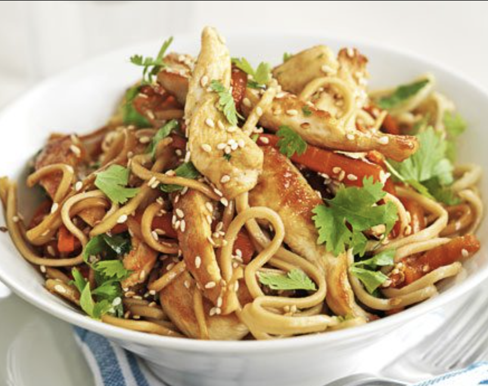

<h1>Stir fry </h1>



<h2>Ingredients</h2>

<ul>
    <li>2 blocks of egg noodles</li>
    <li>2 tsp of sunflower oil</li>
    <li>2 cooked chicken breats</li>
    <li>Any vegtables you like, peppers, carrots or onions</li>
    <li>Chill sauce (however much you like)</li>
</ul>

<h3>Method</h3>